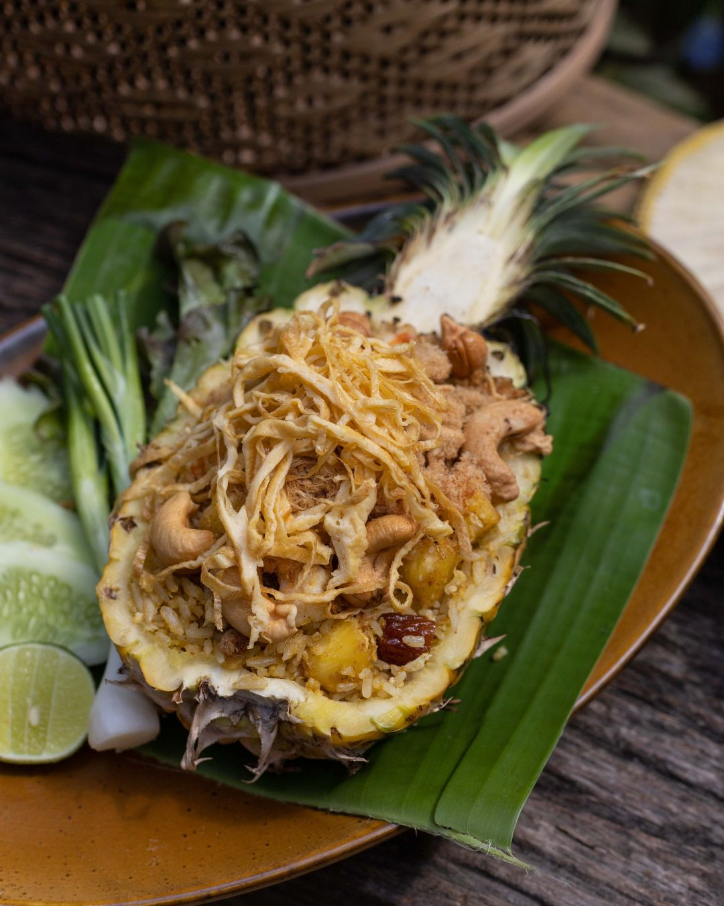
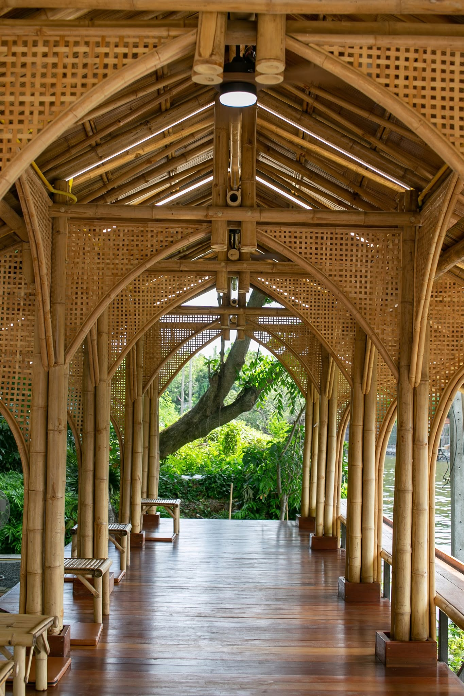
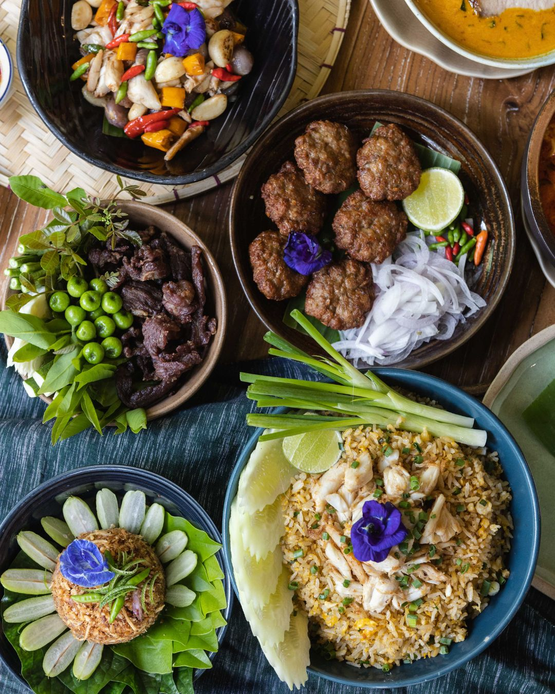
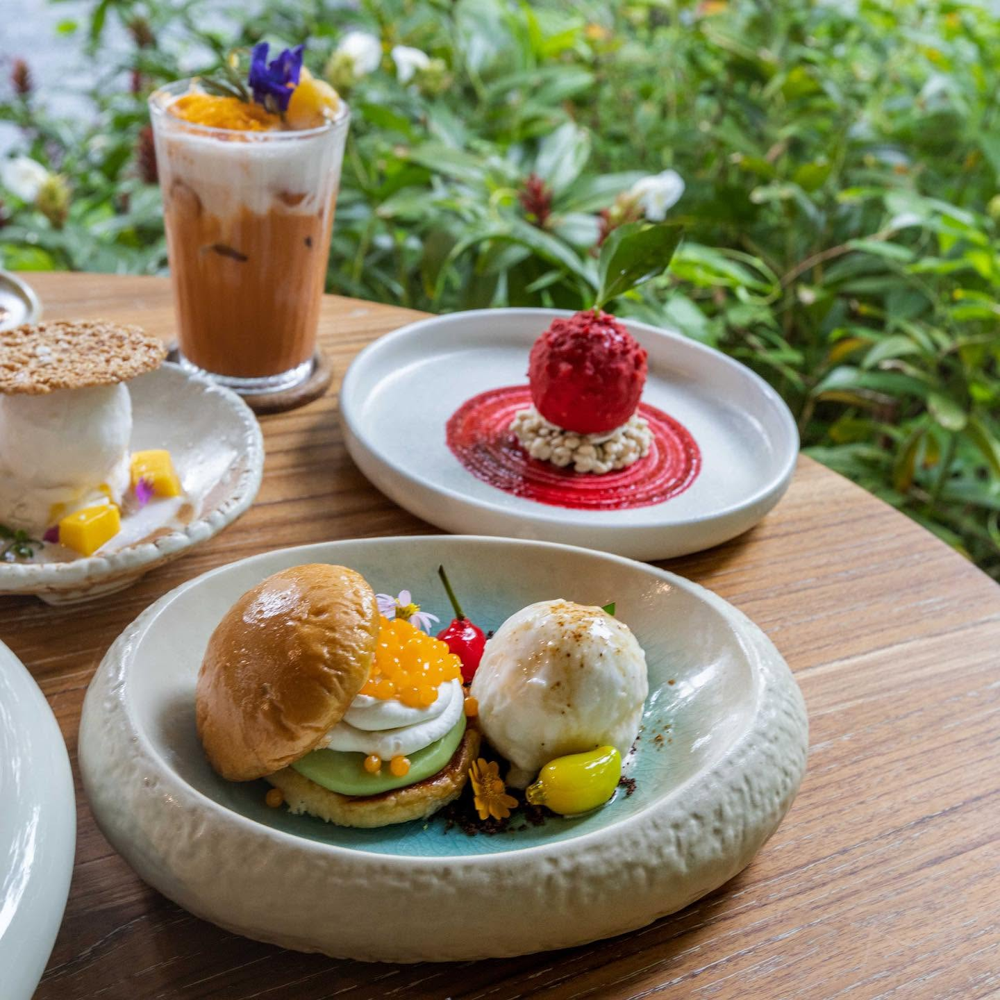
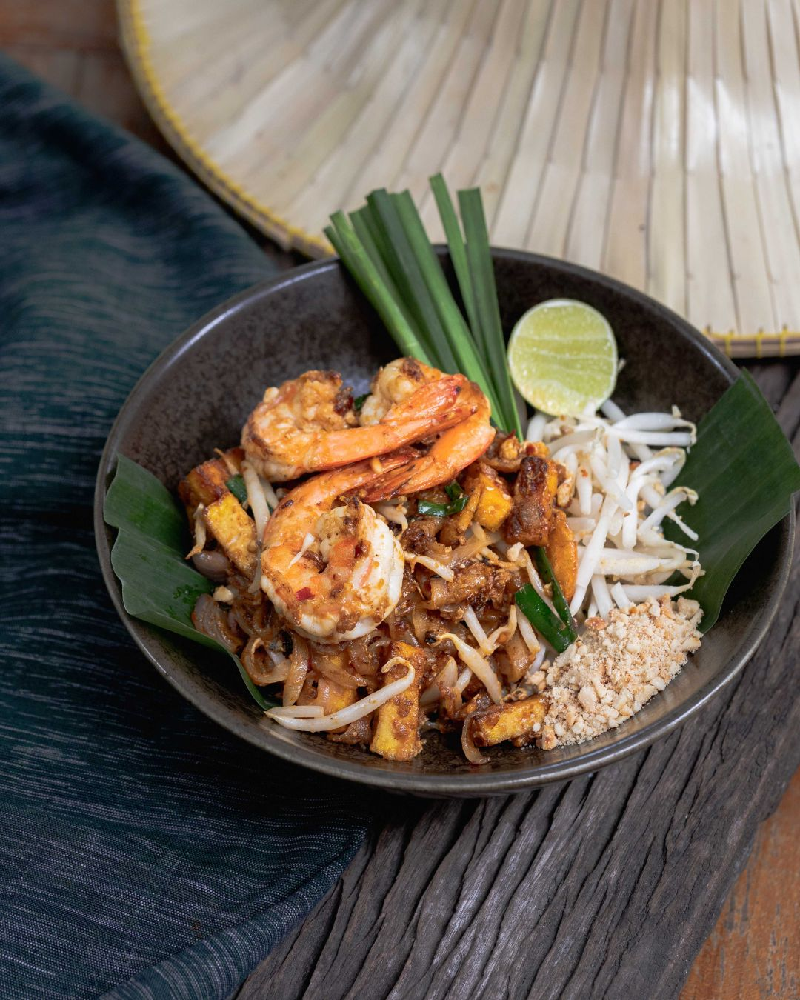
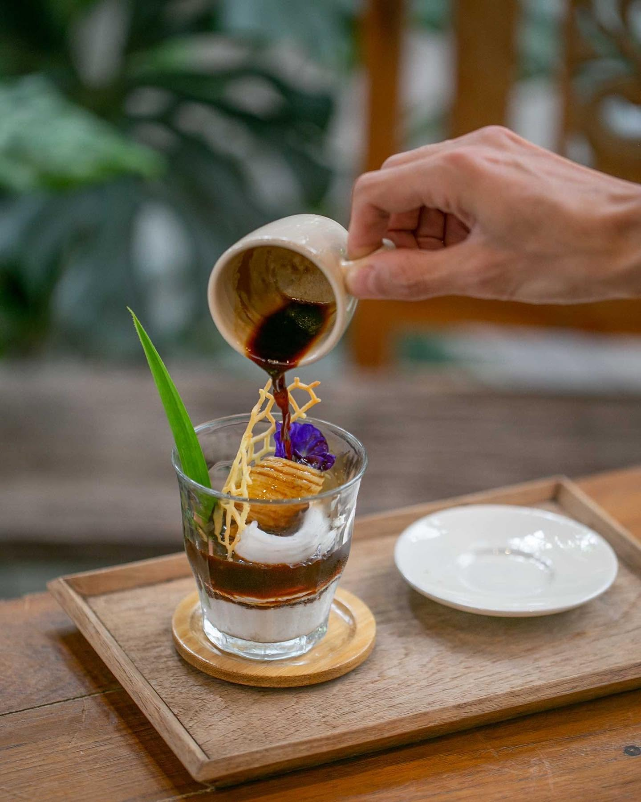
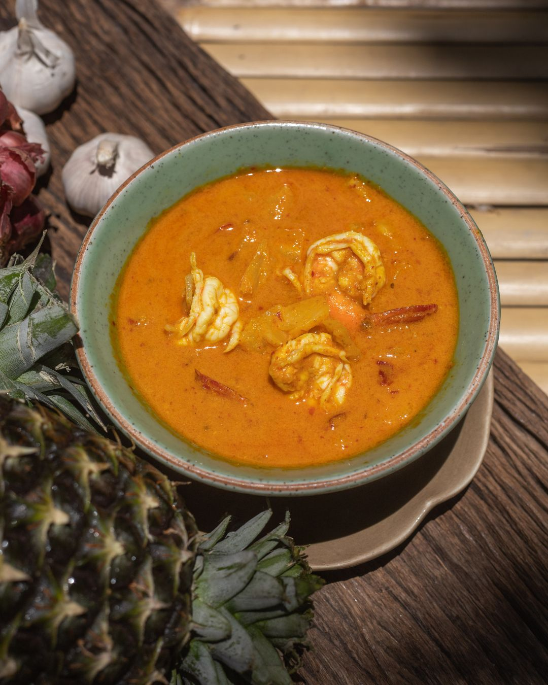
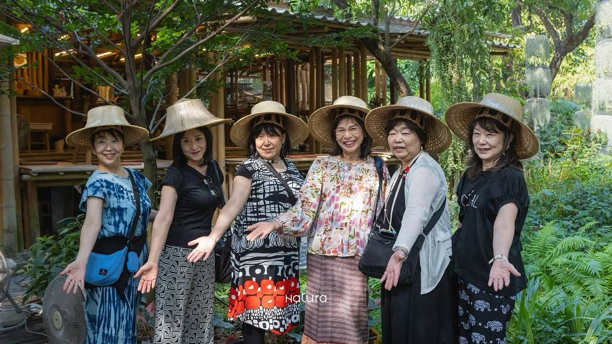
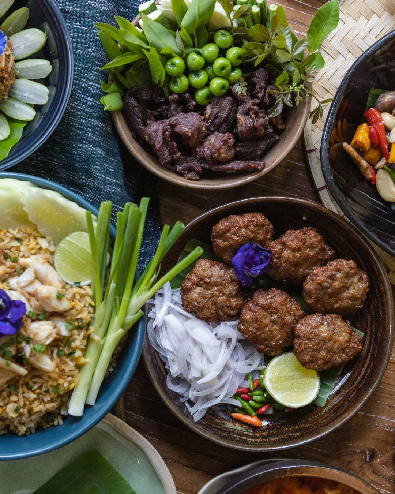

Experiences · Dining
Dining at Natura Café
Back to all experiences

- Format
- Casual on-site café · walk-ins welcome
- Menu
- Garden-to-table, local Thai food
- Good to know
- No reservation needed
Natura Café sits right in the garden, serving local Thai food made from what's grown just steps from the kitchen — garden-to-table, locally sourced.
Herbs, fruit, and vegetables grown a few steps from the kitchen go straight from the beds to your plate. On the menu: green curry (แกงเผ็ด), massaman curry (แกงมัสมั่น), Pad Thai, tom yum, and stir-fried morning glory, alongside dishes like crab stir-fried with bird's eye chili (ปูผัดพริกขี้หนูสวน) — plus a selection of cakes and plated desserts.
No reservation needed — walk in any day the garden is open, on your own or right after a boat tour, workshop, or garden walk.







